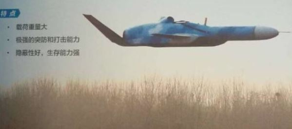
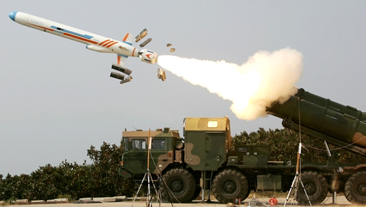

2017-05-16 07:12:00
美国的《Popular Mechanics》杂志在五月4日刊出一篇文章（参见http://www.popularmechanics.com/military/weapons/a26382/china-sea-skimming-anti-ship-drone/ ），讨论了最近泄露的一张据称是共军新式地效反舰飞弹的照片。五天后，《观察者》登出了一篇评论（参见http://www.guancha.cn/military-affairs/2017_05_09_407411.shtml ），反驳了美国人的一些论点。但是就如同前文《共军的超级大炮》一样，中美两边的评论员都没有说到症结，所以我在此做个澄清。
这是引起评论的那张照片。从这个角度，并不能确定机翼的翼展。从弹头上的空速管可以看出它还在早期测试的阶段。
如同上次一样，美国人有些十分离谱的论点，似乎是直接抄录中国军事论坛上的胡猜。他说这枚地效反舰飞弹的飞行高度只有18英寸，亦即半公尺左右；这代表着只有在0级和1级海况下，这枚地效反舰飞弹才能作战。换句话説，在西太平洋，99%以上的日子都不能使用，这当然是个大笑话。
在冷战期间，苏联在里海实验了几个不同型号的地效飞行器，最大的一个，外号叫“里海怪物”，长92米，翼展37米，重达500吨，但是即使在里海这样风平浪静的内海，原型机还是因为大浪而损毁。正因为地效飞行器的抗损性太差，苏联认为它作为登陆艇没有实用价值，转而开发同样吨位的气垫船，也就是后来的野牛级。
共军现役的YJ-62飞弹，助推火箭才刚引燃。它被设计来全程以500+节飞行，所以翼展只有2.9米。
传统的地效飞行器的飞行高度与翼展成正比；既然照片里说它“载荷重量大”，那么这枚新飞弹应该不小于共军现役的重型反舰飞弹YJ-62，也就是至少7米长。它的翼展从侧面角度的这张照片很难确定，就算比长度还大，也不太可能超过10公尺。里海怪物的翼展比它大了近4倍，飞行高度也就高了接近4倍，还因为不耐风浪而不能实用化，所以这枚地效反舰飞弹必然不可能只是一个传统的地效飞行器。
美国人说它的飞行速度是每小时600英里，亦即约530节，这比里海怪物的极速270节还要高出一倍。YJ-62的速度是600节，反而和它相似。那么问题就来了，速度和载重都和已经快淘汰的现役装备差不多，尺寸却宽大了许多，很难塞进发射筒里，为什么还要开发呢？美国人就因此很高兴地做了结论，这枚飞弹唯一的好处就在于飞得比YJ-62更低，但是美军航母战斗群的E-2D预警机就是专门设计来探测低空目标的，就算飞行高度只有18英寸，一样能在215英里（344公里）外侦测到，其后的成功拦截是例行而且必然的。
对于上面这一论点，《观察者》的文章针锋相对地说，他们刚好最近才采访了该导弹方案的航天科技集团某研究院负责人，一方面证实了照片的真实性，另一方面却宣称“这种导弹的设计目标主要就是突破E-2D预警机和标准6导弹的拦截”。这当然是很奇怪的：《观察者》说这型飞弹的飞行高度是6米，虽然比18英寸合理的多，但是与YJ-62的10米飞行高度更没有根本上的差别，它的翼展又比YJ-62大得多，外形也完全没有隐身处理，怎么可能会有更小的雷达截面呢？
《观察者》的文章还说这枚飞弹的飞行速度是每小时965公里，这刚好是600英里，所以应该是沿用美国人的説法。然后文章基本上一再重复说它有神奇的隐身能力，而这个能力就来自于飞行高度降低了4米。那么问题又来了，YJ-62降到6米的飞行高度并没有技术困难，主要只是为了避免风浪才设定到10米的高度，为什么不乾脆只把YJ-62的进气口改到上面以避免进水就成了呢？
要解答以上这些谜题，必须对雷达和地效飞行器的原理做比较深入的分析。我们先从雷达谈起。
地面和军舰上的防空雷达，一般是直接往上看，没有什么背景杂波的问题，但是受地球曲率限制，对巡航导弹这类低飞的目标，探测距离非常有限。所以上个月美军用战斧导弹攻击叙利亚的空军基地，俄军的S400防空系统虽然也在叙利亚，却根本看不到也打不着。当时我评论说，能对抗巡航导弹的，只有以先进预警机为核心的完整防空体系。上周俄军就赶紧亡羊补牢，派了一架预警机进驻叙利亚。
但是预警机固然居高临下，不受地球曲率阻挡，地面和海面背景却都会產生大量的回波，即使有现代的高速计算机，也不可能准确地完全过滤掉。E-2D作为一种舰载机，在尺寸和载重上更有额外的严格限制，别説不能用上共军KJ-500那样的三面阵列，连一面L波段的AESA阵列都载不动，为了维持足够的探测距离和反隐身能力，只好进一步牺牲解析度，而选用波长更长的UHF波段。但是如此一来，E-2D对背景杂波，就比战机上的X波段阵列还要敏感得多。
其实这基本上就是如何让雷达具有下视能力的问题，1960年代美军的解决方案是利用多普勒效应：当雷达波碰到目标反弹时，如果目标正在向雷达波源飞近，雷达反射波的频率会变高；反之，如果目标正在远离，反射波的频率会降低。既然一般的地面/海面背景（如车辆、飞鸟、风吹的树叶和波浪等等）的速度都很有限，只要专注在频率变化了很大的信号上，就自然把背景杂波通通过滤掉了。这个简单粗暴的办法，至今仍是机载防空雷达下视能力的基础。
但是这个办法（叫做Pulse-Doppler Radar，脉衝-多普勒雷达，不能用连续波，必须用脉衝才能精确测距）有一个先天上的缺点，就是只能侦测到有足够径向（直面或直背）速度的目标，所以躲避敌机探测的一个基本战术，就是绕着它转个大圈，那么速度主要成为切向（侧面），自己会被敌机雷达因径向速度不足而直接过滤掉，从它的荧幕上消失。
E-2D的UHF阵列，天生就对传统的隐身外形有若干克制能力（这也是为什么共军一直没有开发像美军AGM-129那类的隐身导弹的原因），但是对背景杂波很敏感，必须依靠多普勒原理在频率上做严格的限制。它对径向速度的侦测下限是个大机密，但是我认为不可能低于200节，有可能高达300节。这在实战中，一般并不成问题：一方面它的探测距离远，对方的战机和导弹如果老是绕圈子，还没有飞进防御核心油料就用完了；另一方面，飞行器的升力，也就是载重能力，随速度的降低而很快减小，一般的军机和飞弹都必须至少以高次音速（即上面美国人猜测的530节，这是马赫0.8）飞行，才能轻松携带足够威胁大型战舰的弹药和燃料。
所以要对E-2D隐身，有一个很简单的办法，就是以慢打快。只要把飞行速度降低到明显低于200节的地步，即使直对着E-2D飞去，它的AN/APY-9雷达仍然只能是睁眼瞎子。这里我猜测一些参数，然后看看它们是否合理。假设这枚飞弹全重2.5吨（YJ-62重1.4吨；我估算的是最终实用型的尺寸，目前的技术验证机可能小很多），全长9米，翼展8米，巡航速度140节，最大速度530节，动力来源是一座小型涡扇发动机。我们可以拿一架小喷气机来比较，例如Honda Jet，最大重量4.8吨，全长13米，翼展12米，巡航速度370节，最大速度440节，装备了两个一吨级推力的涡扇发动机。可以看出这枚飞弹除了巡航速度特别低之外，基本上就是Honda Jet一半大的一架中规中矩的喷气机。
那么怎么让飞机的巡航速度降下来呢？必须找到额外的升力来源，而地面效应就正是一个很好的额外升力来源。所谓地面效应，就是当飞机的飞行高度等于或低于翼展的时候，地面与机翼之间会形成一个高压气垫，因而给予飞机额外的升力。地面效应并不是地效飞行器的特权，一般民用飞机在降落的过程中，都会运用地面效应，先在跑道上空几公尺拉平，慢慢让空气阻力减低航速，然后平稳地轻轻触地。所以一架飞机在地面效应下的巡航速度，就是它的正规降落速度（严格来説，是稍高于正规降落速度，一方面这是因为降落时油料已经用得差不多，所以重量减轻了；另一方面降落时会放下襟翼），而远低于空中的巡航速度，例如Honda Jet的正规降落速度就是115节。所谓的地效飞行器，指的是不能在地面效应以外的空中正常飞行的飞机，换句话说，它们的极速很低，只比地效巡航速度高一点，例如前面提到的里海怪物，地效巡航速度是230节，极速却只有270节。
总之，这枚地效反舰飞弹其实并不是地效飞行器，而是一架小型无人机，正常的高空巡航速度可能在450节左右，但是它的机翼和下机身被针对地面效应而优化了，可以平稳地以140节的地效巡航速度飞行三个、甚至四个小时以上。如果海面平静，那么就依6米高度飞行；如果风浪大，则可以升到10米，增加航速到略低于200节以弥补升力。在最后几公里，再以最大速度衝刺（有可能类似YJ-18，即抛弃机翼和涡喷发动机，以火箭发动机进行短程超音速飞行），以减低被近迫防御系统拦截的机率。
论证完毕，我在此藉机闲扯一段有关140节空速的陈年往事。1991年，我还在哈佛博士班，同时也抽空开小飞机。那时我常租的小飞机是Cessna 172，它是最容易开的入门机，但是速度很慢。有一天，我从波士顿往西飞，到了麻省中部，这里刚好有一个大机场，叫Bradley International Airport，是康州首府Hartford和麻省的Springfield市共用的国际机场。小飞机一般没事不会到国际机场去找麻烦，但是那天我兴致来了，看到好像没有什么班机在排队起降，就请求降落。机场管制员一开始也不在意，把跑道方位给了我，叫我按照例行方案进场。于是我慢慢地转入Downwind Leg，然后发现这个跑道比我习惯的长了很多，飘了半天才准备要左转进入Base Leg，忽然机场管制员发声道，你有一架波音737排在你后面，请提醒我你们Cessna 172的降落速度是多少。我说是70节，他说737的降落速度是140节，你看着办吧。我的副驾驶是哈佛物理系的美国同学，他说机场管制员是在暗示我们必须加速，但是又不愿意明白叫我们违反驾驶常规，否则要是出了事他会有法律责任。我说我不在乎自己负责，就呼叫机场管制员，说我请求以极速降落，他马上准了。Cessna 172的极速是多少呢？不多不少，就正是140节。那是我唯一一次驾机在真正的（即常有民航班机来往的）国际机场降落，也是唯一一次高速降落（襟翼到即将落地才放下），而且后面还有一架737追来，刺激十足。
【后注】有老同学写电子信件来更正，Bradley那个经验并不是我唯一一次驾机在国际机场降落，他晚一年来波士顿找我玩的时候，我带他飞到Portland International Airport（缅因州的小Portland，不是Oregon州的Portland）降落吃饭。那次的降落也很刺激：我们在巡航高度已经快到机场正上空了，机场管制员却叫我跳过一般的Pattern，直接落地，所以我关掉油门，做了一个急转弯侧俯衝，就像二战的战斗机脱离编队准备俯衝扫射一样（那个动作叫做“Skid”，我的乘客或许觉得惊心动魄，其实它是个很安全的基本技术，是小飞机必须很快降低高度时的标准程序）。他记得我的地效拉平没做好，飞机在跑道上蹦了一下，这点我倒不记得，哈哈。不过Portland没有什么交通，不像Bradley那样有民航班机来给真正的压力；正因为它的国际机场名头有点名不符实，所以早先忘了提。